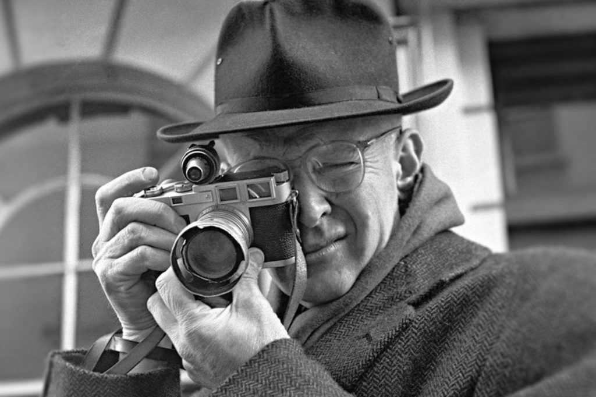

O fotojornalismo é uma vertente da fotografia focada na narração de histórias documentais e na reportagem de notícias. Seu principal compromisso é com a verdade, exigindo do profissional ética e ausência de manipulações para relatar fatos reais e o impacto humano na sociedade.
Cobertura de eventos factuais e inesperados de grande urgência, como conflitos, desastres naturais e protestos.
Reportagens mais aprofundadas e atemporais, focadas em questões sociais, culturais ou no cotidiano de uma comunidade.
Imagens de pessoas envolvidas em notícias, focando em suas emoções e no contexto da história que representam.
Captura da ação, do clímax e das emoções intensas presentes em competições e eventos esportivos de qualquer magnitude.